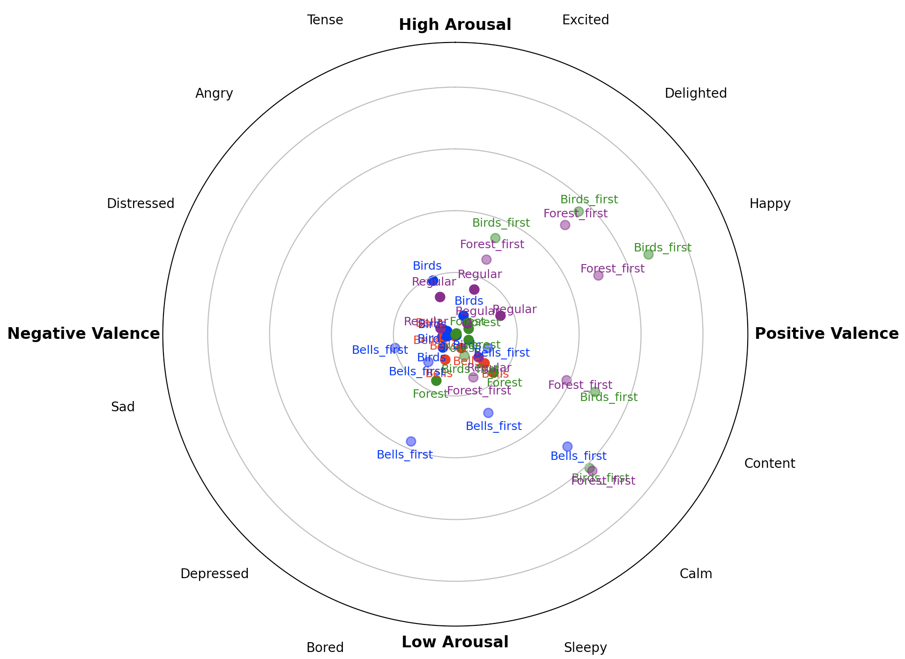
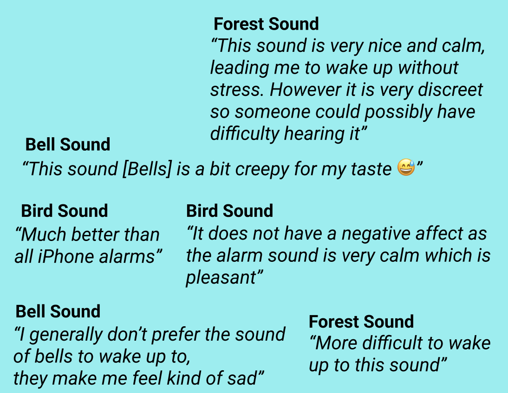

Ears Wide Open
|Rea-Ioanna Tsakopoulou | Erik Grahn | Robert Minasyan | Oskar Hokkanen Eriksson | Pim Erlandsson
#human-perception
#experiment
#analysis
#python
#sound

28 Oct 2024 - 13 Jan 2025
Goal of finding out the best sound for waking up in the morning. Three different sounds were tested along with the subjects regular alarm. The best alarm sound was not found but insights into the subjects preferences were noted.

